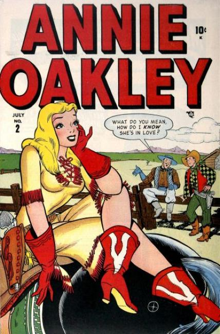
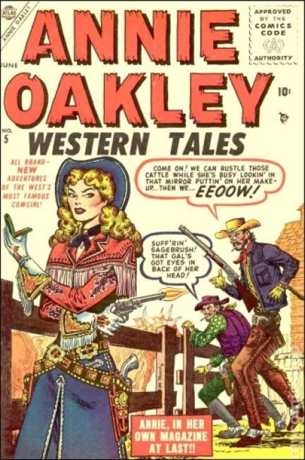
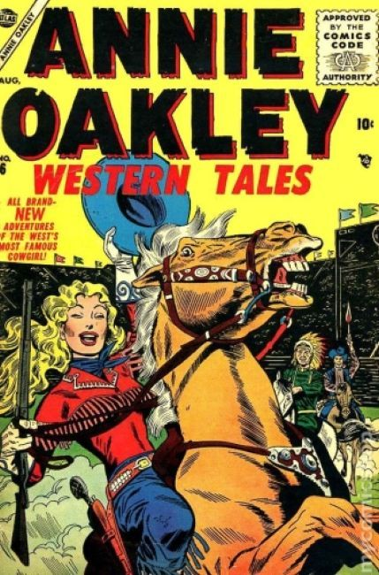
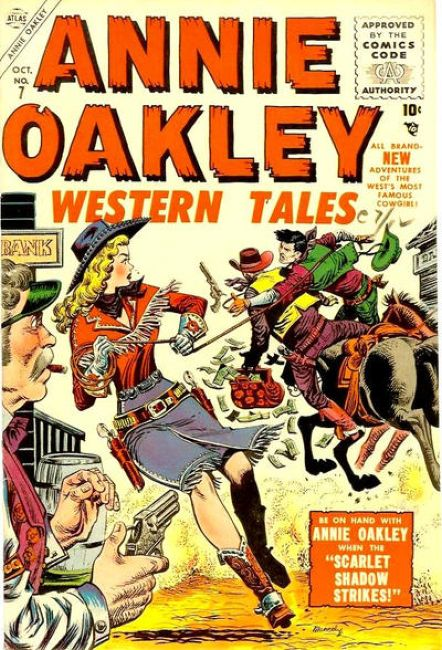
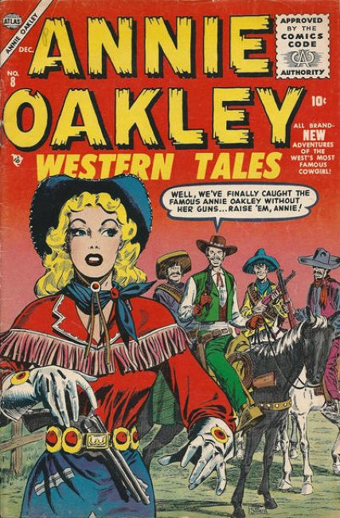
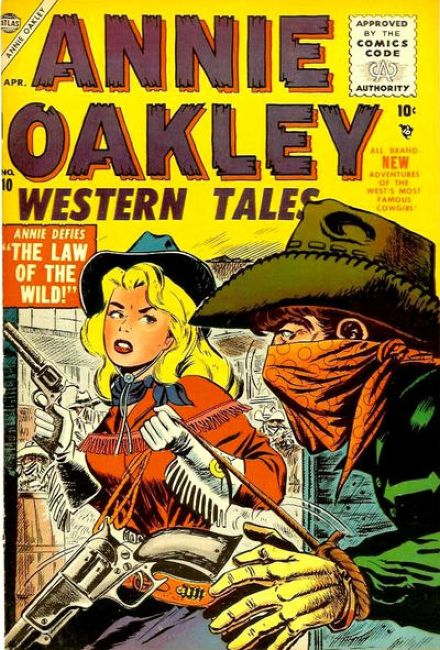

4 issues 1948, 7 issues 1955-1956 Atlas (Marvel)
×






❮
❯
Western Tales of action and adventure starring the famous female sharpshooter, Annie Oakley.
Issue #1
- "Just Love That Cowhand"; Annie is hired on the Barr-X Ranch after capturing a wild steer.
- "The Grecian Wiggle" text story.
- "She's My Gal, Pa"; A lawyer comes looking for a blonde girl who ran away from home and everybody thinks it's Annie.
- "Heart Havoc,"; Gabby thinks he's finally going to get a date with Hedy but it doesn't quite turn out that way.
- "Wrong Steer,"; Sally arranges a rodeo so that Slim can defeat Annie in tests of skill.